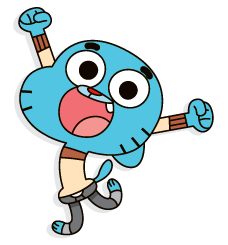

Gumball

Gumball Watterson é o protagonista de "O Incrível Mundo de Gumball". É um gato azul de 12 anos que vive na cidade fictícia de Elmore com sua família e amigo Darwin, um peixinho dourado. Gumball é conhecido por suas aventuras e confusões, muitas vezes envolvendo sua família e colegas de escola, especialmente sua paixão, Penny Fitzgerald.
Curiosidades:
- O nome completo de Gumball é Gumball Tristopher Watterson
- Gumball é alergico à gatos
- O personagem foi inspirado em outras animações e cultura pop, como os mascotes japoneses dos anos 70 e 80.
- Algumas de suas situações e expressões são inspiradas em memes da internet